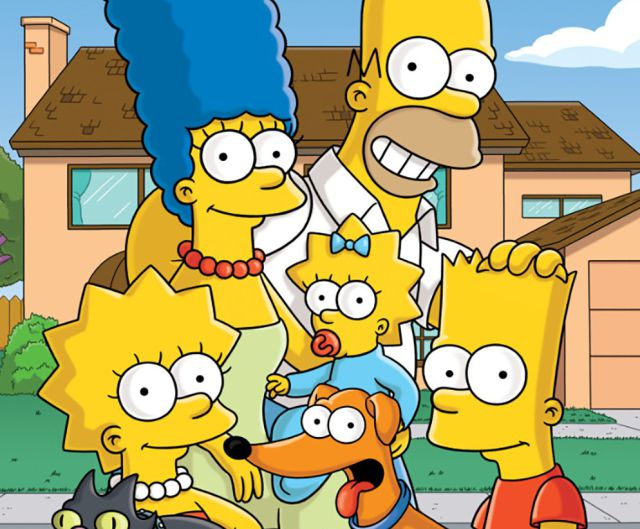

Los Simpsons

Historia
es una serie estadounidense de animación, en formato de comedia de situación, creada por Matt Groening para Fox Broadcasting Company y emitida en varios países del mundo. La serie es una sátira hacia la sociedad estadounidense que narra la vida y el día a día de una familia de clase media de ese país (cuyos miembros son Homer, Marge, Bart, Lisa y Maggie Simpson) que vive en un pueblo ficticio llamado Springfield y la imagen a continuacion es su primer logo.
La familia fue concebida por Groening y poco después se estrenó como una serie de cortos de animación producidos por James L. Brooks.Groening creó una familia disfuncional y nombró a sus personajes en honor a los miembros de su propia familia, sustituyendo su propio nombre por Bart la foto a continuacion es el creador de los simpsons, su nombre es Matt Groening.
Los cortos pasaron a formar parte de El show de Tracey Ullman el 19 de abril de 1987, Los cortos pasaron a formar parte de El show de Tracey Ullman el 19 de abril de 1987, pero después de tres temporadas se decidió convertirlos en una serie de episodios de media hora en horario de máxima audiencia. Constituyó un éxito de la cadena Fox y fue la primera serie de este canal en llegar a estar entre los 30 programas más vistos en la temporada 1992-1993 en Estados Unidos.
Desde su debut el 17 de diciembre de 1989 se han emitido 640 episodios en 26 temporadas, habiéndose estrenado la temporada 30 en el año 2018.En el final de la decimoctava temporada, el 20 de mayo de 2007, se emitió en Estados Unidos el episodio 400: "You Kent Always Say What You Want". Los días 26 y 27 de julio de 2007 se estrenó Los Simpson: la película, la cual recaudó cerca de 526 millones de dólares en todo el mundo.
Los Simpson ha ganado numerosos premios desde su estreno como serie, incluyendo 24 premios Emmy, 24 premios Annie y un premio Peabody. La revista Time del 31 de diciembre de 1999 la calificó como la mejor serie del siglo XX, y el 14 de enero de 2000 recibió una estrella en el Paseo de la Fama de Hollywood. Los Simpson es una de las series estadounidenses de dibujos animados de mayor duración y el programa estadounidense de animación más largo.El gruñido de fastidio de Homer "D'oh!" ha sido incluido en el diccionario Oxford English Dictionary, mientras que la serie ha influido en muchas otras comedias de situación animadas para adultos.